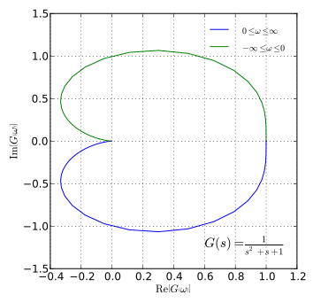

Frequency-domain analysis evaluates how systems respond to sinusoidal inputs of varying frequencies. It is critical for understanding system behavior in the steady state and for designing controllers that meet performance criteria like stability and robustness.
A Bode plot shows magnitude (gain) and phase shift versus frequency on a logarithmic scale. It's used to analyze and design control systems.
Plots the real and imaginary parts of the frequency response function on a complex plane. It helps determine system stability via encirclements of the critical point (-1,0).
Gain Margin (GM) and Phase Margin (PM) are safety buffers that tell how far the system is from instability.
Given a transfer function G(s), substitute s = jω to find the frequency response G(jω). Use this to compute magnitude and phase at different ω.
Answer: How much additional phase lag a system can tolerate before becoming unstable.
Answer: If the Nyquist plot encircles the point (-1, 0) in the clockwise direction.
Answer: Substitute s = jω and evaluate magnitude and phase for varying ω.